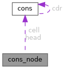

|
cons
|
Structure representing a cons node. More...
#include <cons_node.h>

Data Fields | |
| struct cons | cell |
| The cons cell forming the basis of the node. | |
| struct cons * | head |
| Pointer to the list of child nodes (sub-nodes). | |
Structure representing a cons node.
A cons node is a specialised data structure that builds on top of cons cells. It contains a cons cell as its first member, allowing it to be treated as a cons cell when needed. The head field is a pointer to a list of child nodes (sub-nodes), which are also cons nodes. This structure allows for the construction of a tree of cons nodes, where each node can have a parent (super-node) and a list of children (sub-nodes).
Definition at line 44 of file cons_node.h.
| struct cons cons_node::cell |
The cons cell forming the basis of the node.
The car field of this cell points to the parent node (super-node), while the cdr field links sibling nodes (sub-nodes) together in a list.
Definition at line 55 of file cons_node.h.
| struct cons* cons_node::head |
Pointer to the list of child nodes (sub-nodes).
The head field is a pointer to a list of child nodes, which are also cons nodes.
Definition at line 62 of file cons_node.h.